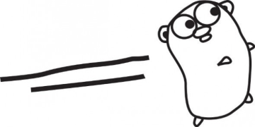

Golang: Our first look
(8/16/15)
by Kirt Gittens
Do you like C? Are you scared to write actual C? Well then do I have something to tell you about!
Here at damage control, there seems to be hours of never ending debate about what language and frameworks to use for the development of our next product, (as there should be anywhere you get a bunch of developers in one place), and the recent discovery of golang has help extend that fruitless argument for a substantial number of hours.
Google's golang is a relatively new statically typed, and compiled language that's recently been taking developers by storm, and for good reason.It's headed up by some of the CS greats (Rob Pike, and Ken Thompson are involved in it's design), and for the most part, has almost no learning curve. If you're used to any languages in the same category you can probably pick it up in a day or two. Go feels really minimalistic in its design, in all of the ways that make C appealing, but comes with a modern standard library and that definitely helps kickstart your ideas. In many ways its exactly what a certain subset of us have been looking for.
So, Should you use it?
It might not be for everyone, but we can offer some reasons why you might want to.
It's like C, but for Mere Mortals
Go feels really farmilliar to us as former C developers, but without a lot of the memory management nightmares that have kept C out of the modern language conversation in recent years. (yes there is garbage collection, no I will not start a fight with you about it, yes there's a valid conversation to be had there). Go is strongly typed, but there's type inference, which makes it feel a lot friendlier to people coming from modern languages.
// in golang stuff like
var mystring := "string without type declaration"
var myint = 233 // int declared without int myint
// JUST WORKS
Batteries Included
Go feels minimalistic, but at the same time, maintains all of the essentials necessary for your average tasks in the standard library out of the box. There's no object oriented programming (structures in Go seems to feel much more like objects, since you can now define functions on structs without a lot of function pointer magic). Without needing any external frameworks or packages, we were able to get our web application off the ground, using the packages included with the go distribution, and in comparison to the other languages of a similar structure and type, Go's standard library feels much more developed (while it might shirk the minimalism requirements of C, the value that's provided is endless). You get predefined data types that just aren't present in C, things like slices and maps, which are essentially python lists and dictionaries,
(and hey, MAPS ARE A BUILT IN TYPE, YOU DONT NEED TO READ A PAPER ON SIMPLE UNIFORM HASHING ASSUMPTIONS TO GET PYTHON DICT STYLE KEY VALUE PAIRS)
But there's also one really aggravating thing that's made development difficult
In python, modules are simple individual source files, and packages are collections of those files. You can have as many pacakges and modules in whatever directory structure you want, so long as they're accessible from the file you need them in. This is important because it means there's essentially no "enforced" directory structure, other than the basic way that you choose to nest your files within modules. You maintain complete control over the organization of your code by default. In Go, this is not the case.
Because of the way "packages" work in go, you can't just write code in another file (like headers in C, or modules in python), and have it accessible from your main program, which makes the organization of your code take a little bit more work. Coming from Python or C, your knoweldge about headers and modules is of little use here, and including a bit of Go code from another file, can't be done without the proper workspace configuration, and environment setup (packages are not equivalent to python's modules or C's headers), and if you want to use a different directory structure than what go has in mind, you may run into some issues with the setup.
These observations are coming from fairly early into usage of the language, (as well as being relatively early into the devlopment of the language itself), but so far Go feels like it's the powerful tool we've been waiting for.
~ishygddt